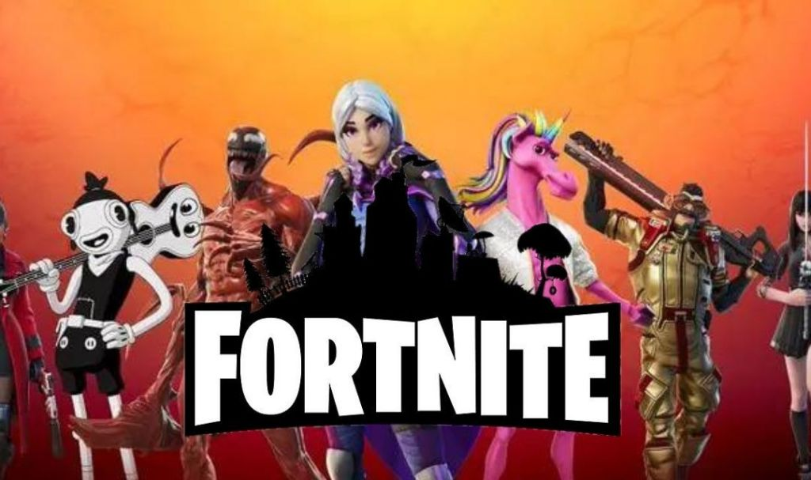

Fortnite

Es un juego de tipo batalla real en el que compiten hasta cien jugadores en solitario o en escuadrones de dos o cuatro miembros. Los jugadores saltan de un autobús que cruza el mapa en el momento que deseen, y empiezan sin armas. Cuando aterrizan, deben buscar armas, objetos útiles y recursos, evitando que los maten mientras atacan a otros jugadores. La acción se divide en rondas con una duración determinada